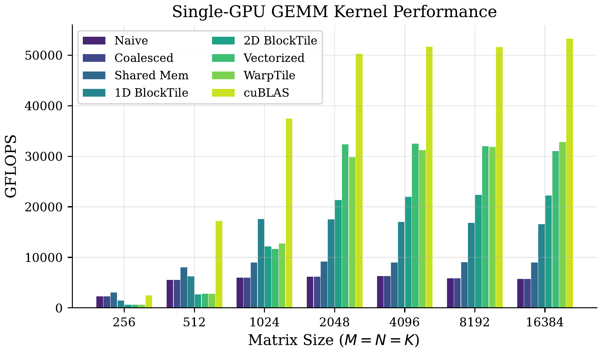
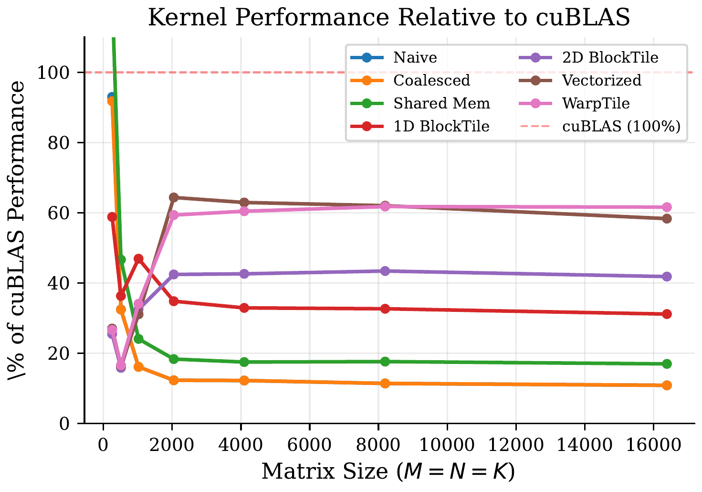
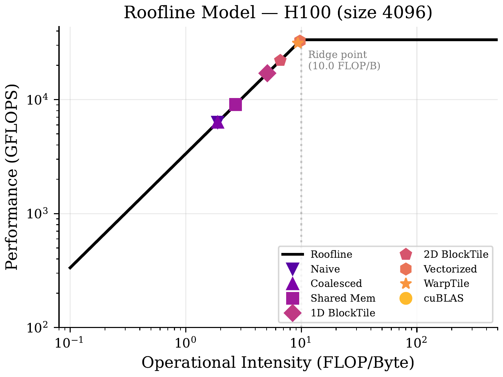
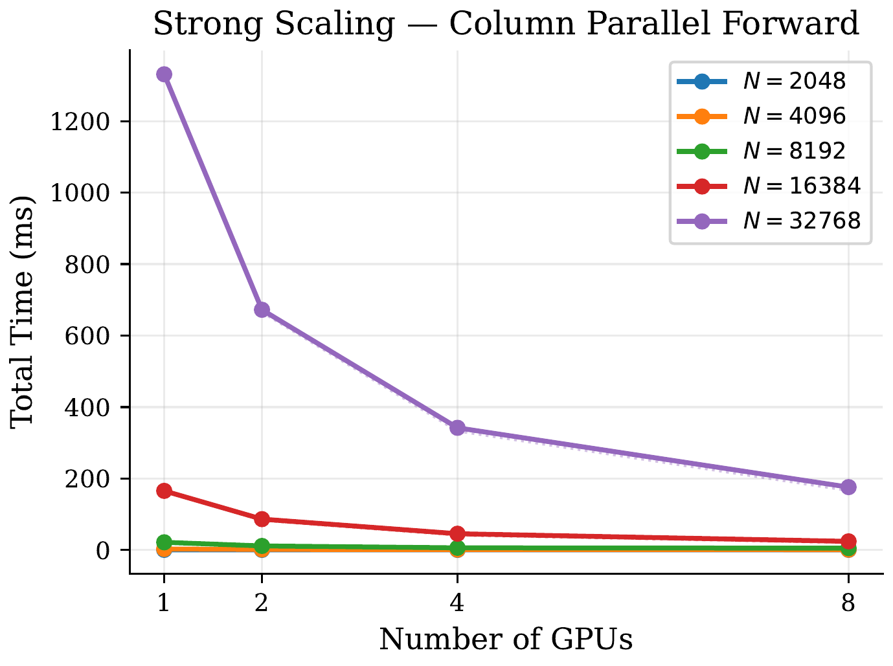
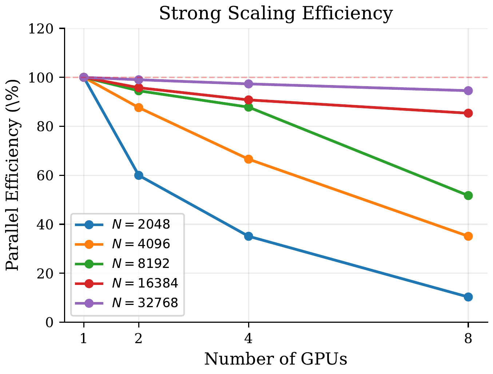
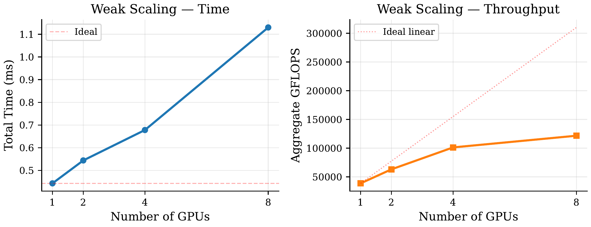
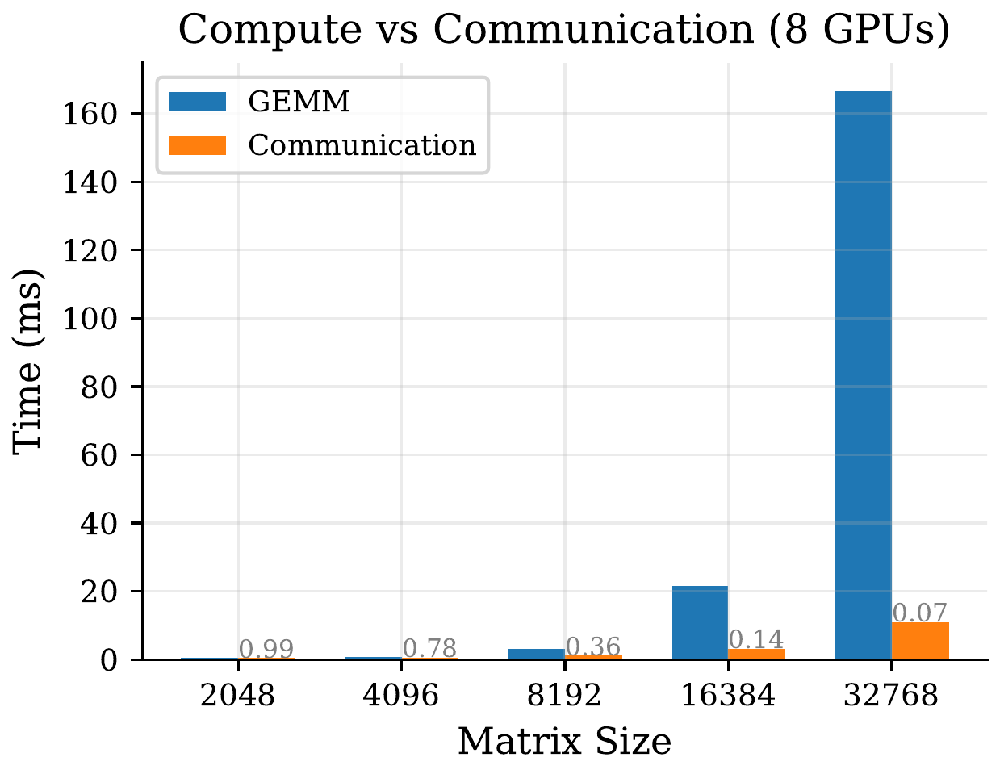
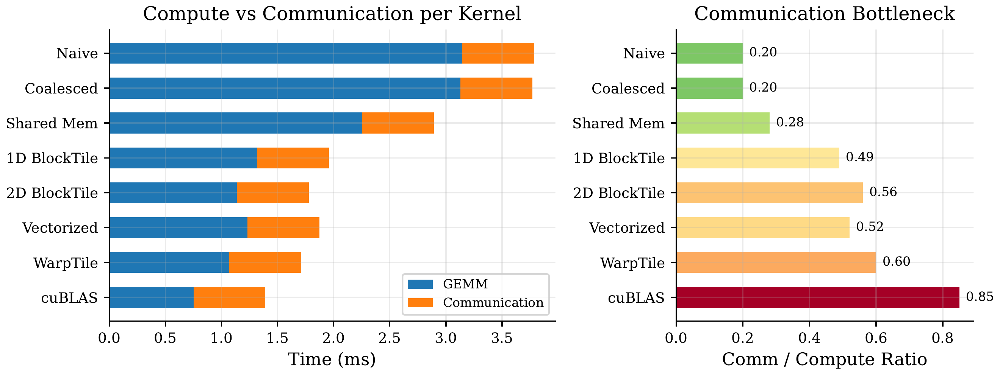
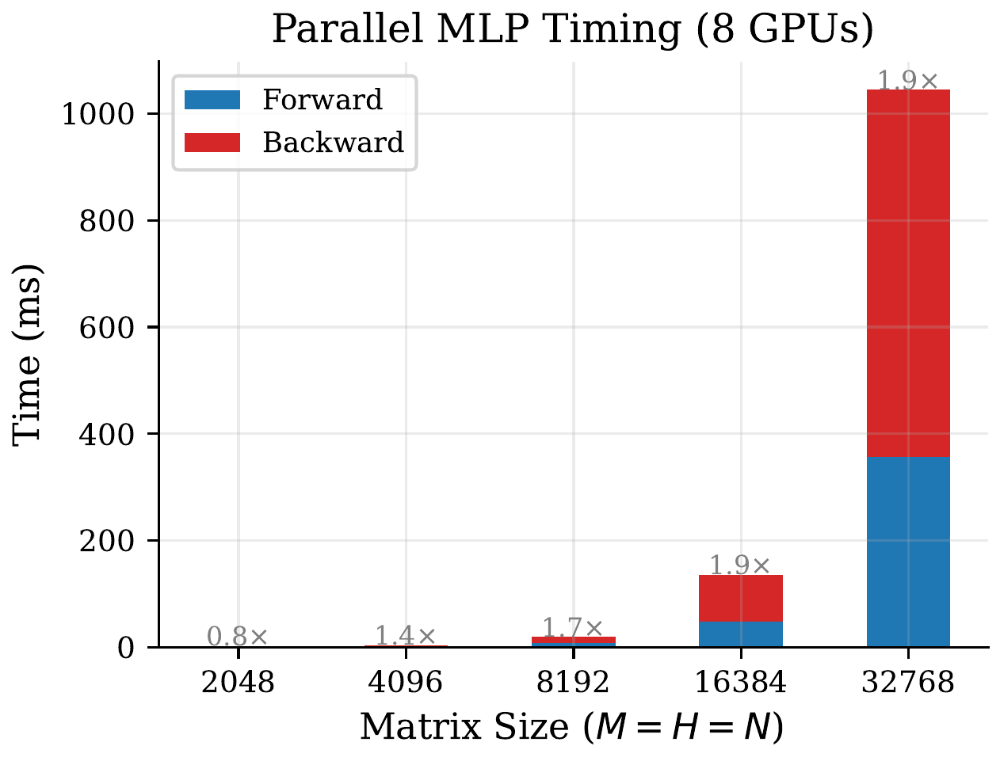
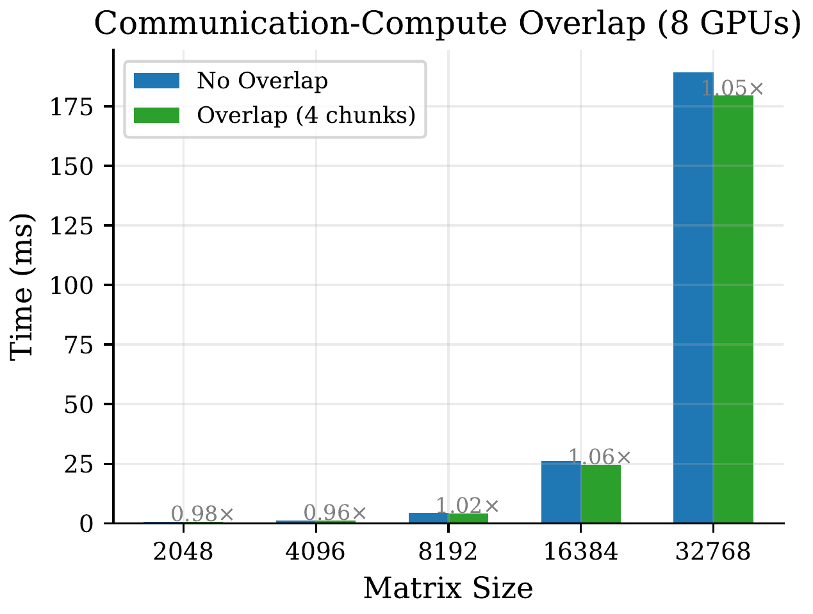

Scaling Matrix Multiplication
From CUDA Kernels to Multi-GPU Tensor Parallelism
Aryan Jain • Fanyi Pu • Ze Hong Maxwell Au
School of Computer Science and Engineering, NTU
SC4064 GPU Programming
Overview
Single-GPU
- 7 progressive CUDA GEMM kernels
- Naive → warp-level tiling
- Best: 63% of cuBLAS
Multi-GPU
- Tensor parallelism via NCCL
- Column & row parallel layers
- 8×H100, up to 400 TFLOPS
Key question: As kernels get faster, when does communication become the bottleneck?
GPU Memory Hierarchy (H100)
| Level | Size | Bandwidth | Latency |
|---|
| Registers | 256 KB/SM | ~20 TB/s | 0 cycles |
| Shared Memory | 228 KB/SM | ~19 TB/s | ~20 ns |
| L2 Cache | 50 MB | ~5 TB/s | ~200 ns |
| HBM3 | 80 GB | ~3.35 TB/s | ~400 ns |
Each kernel optimization moves data access from a slower to a faster level.
Roofline Model
\( P_{\max} = \min(\pi,\; \beta \times \text{OI}) \)
- \(\pi = 33.5\) TFLOPS (FP32 peak), \(\beta = 3.35\) TB/s
- Ridge point: \(\text{OI} = \pi / \beta \approx 10\) FLOP/byte
- GEMM theoretical OI: \(N/6\) — compute-bound for \(N \geq 60\)
- In practice, only optimized kernels achieve this
Tensor Parallelism
Distribute \(Y = XW\) across \(p\) GPUs (Megatron-LM)
Column Parallel
\(W = [W_1 | \cdots | W_p]\)
Each GPU: \(Y_i = X W_i\)
Fwd: AllGather
Bwd: AllReduce
Row Parallel
\(W = \begin{bmatrix}W_1\\\vdots\\W_p\end{bmatrix}\)
Each GPU: \(Y_i = X_i W_i\)
Fwd: AllReduce
Bwd: no comm
Parallel MLP Block
\(\text{MLP}(X) = \sigma(X W_1) W_2\) — Column → Row composition
| Step | Operation | Communication |
|---|
| Fwd Layer 1 | Column parallel | None |
| Fwd Activation | Element-wise | None |
| Fwd Layer 2 | Row parallel | AllReduce(Y) |
| Bwd Layer 2 | Row backward | None |
| Bwd Layer 1 | Column backward | AllReduce(dX) |
Column output is already the correct input shard for row layer — only 2 AllReduces per MLP block.
System Architecture
Application Layer
bench_single_gpu (Correctness + GFLOPS) | bench_multi_gpu (6 scaling experiments)
Tensor Parallelism Layer
Column Parallel | Row Parallel | MLP Block (overlap pipelining)
Kernel Layer
GemmKernel (abstract) • KernelRegistry • 9 kernels
CUDA Resource Layer
CudaMemory<T> • DeviceMatrix • CudaStream
- Self-registering kernel registry (open-closed principle)
- Move-only RAII wrappers — no manual
cudaFree
Kernel Optimization Roadmap
| # | Kernel | Key Idea | Effect |
|---|
| 1 | Naive | 1 thread → 1 element | Baseline |
| 2 | Coalesced | Stride-1 access | 12.7× vs naive |
| 3 | Shared Mem | 32×32 tiles | 32× less traffic |
| 4 | 1D BlockTile | TM=8 per thread | Better smem reuse |
| 5 | 2D BlockTile | 8×8 register block | 8× fewer smem reads |
| 6 | Vectorized | float4 loads | Fewer instructions |
| 7 | WarpTile | Warp-level tiling | Better L1 locality |
Single-GPU: GFLOPS

Single-GPU: Key Observations
- Naive/Coalesced: plateau at ~6,300 GFLOPS (memory-bound)
- Shared memory tiling: ~9,000 GFLOPS (32× less traffic)
- 2D BlockTile: 22,044 GFLOPS — 3.5× over smem alone
- Vectorized: 32,612 GFLOPS — our best at 63% of cuBLAS
- cuBLAS: 53,304 GFLOPS (Tensor Cores + auto-tuning)
cuBLAS Percentage

Gap narrows from 12% (naive) to 63% (vectorized)
Roofline Analysis (N=4096)

Naive: OI < 2 → Vectorized: OI ~9.7 → cuBLAS: OI ~15.4 (compute-bound)
Strong Scaling

Strong Scaling Results
7.6×
Speedup at N=32768
(8 GPUs)
94.5%
Parallel efficiency
(N=32768, 8 GPUs)
400
Aggregate TFLOPS
(8×H100)
4.1×
Speedup at N=8192
(8 GPUs)
Parallel Efficiency

Super-linear at p=2 for N=8192 due to improved L2 cache utilization
Weak Scaling

Fixed 2048×2048 per GPU — aggregate throughput: 39.5 → 123.2 TFLOPS (3.1×)
Comm-Compute Ratio vs. Matrix Size

Ratio drops from 0.99 (N=2048) to 0.07 (N=32768) — cubic compute vs. quadratic comm
Comm-Compute Ratio vs. Kernel

Key result: Communication is constant (~0.64 ms). As kernels get faster, the ratio rises from 0.20 (naive) to 0.85 (cuBLAS) — the crossover to communication-bound.
MLP Forward & Backward

Backward 1.1×–1.7× forward (3 GEMMs/layer vs 1)
Communication-Compute Overlap

- Marginal benefit (1.02×) only at N=8192
- H100 NVLink latency already very low (~1 ms for 256 MB)
- More beneficial on PCIe or cross-node setups
Takeaways
1. Single-GPU kernel optimization
- 6,300 → 32,800 GFLOPS through 7 optimization stages
- 2D register blocking is the most impactful technique
- Best custom kernel: 63% of cuBLAS (FP32 only, no Tensor Cores)
2. Multi-GPU tensor parallelism
- 7.6× strong scaling on 8×H100 (94.5% efficiency)
- Comm-compute ratio: 0.20 (naive) → 0.85 (cuBLAS)
3. The fundamental tension
- Faster kernels ⇒ communication becomes the bottleneck
- Distributed DL requires co-optimization of compute & communication